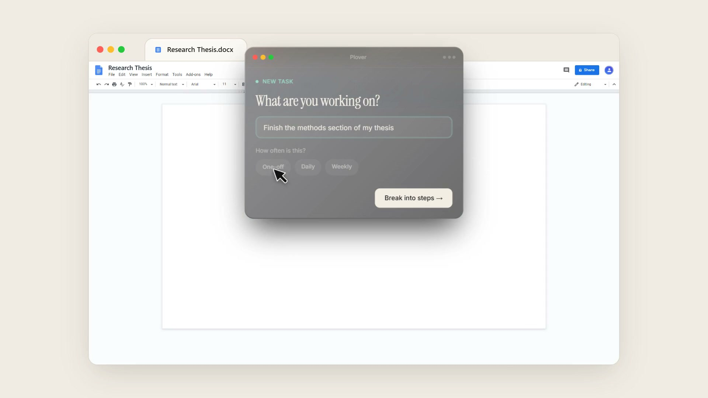
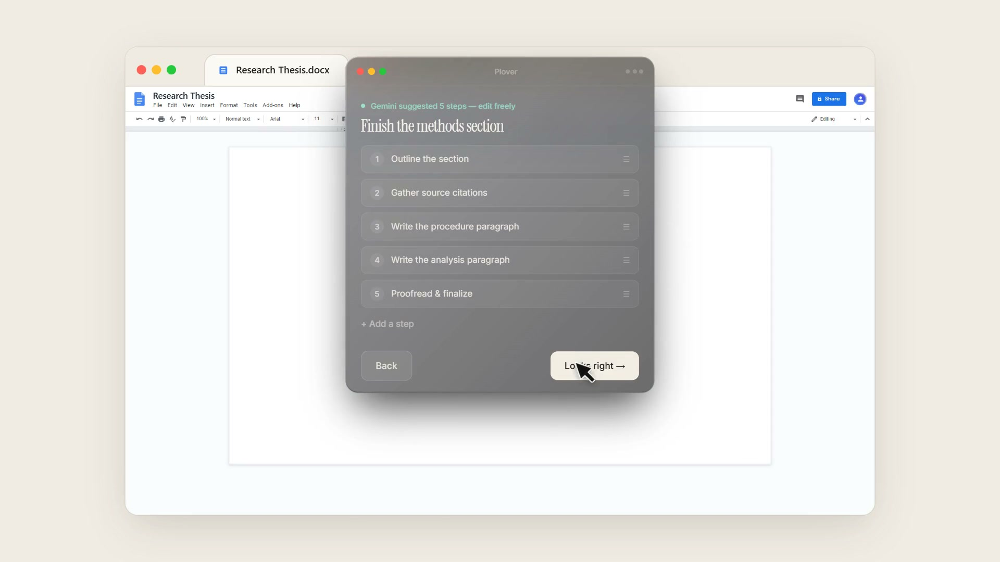
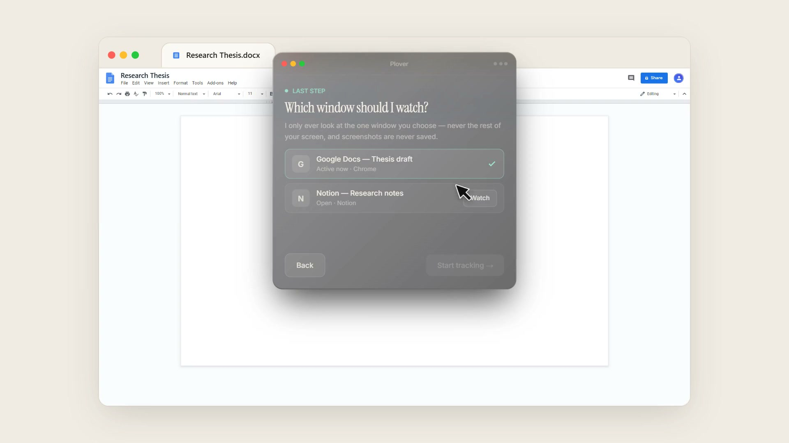
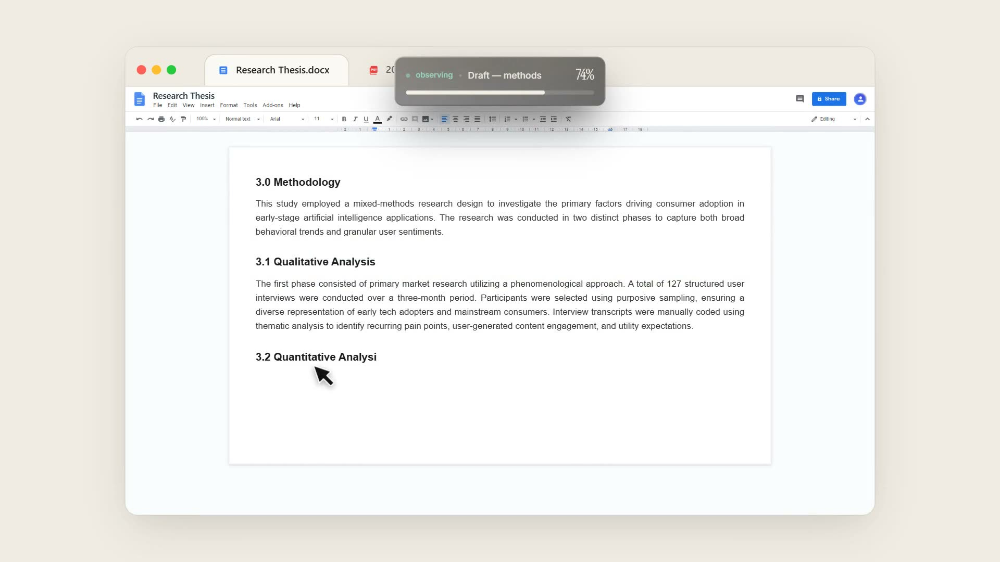
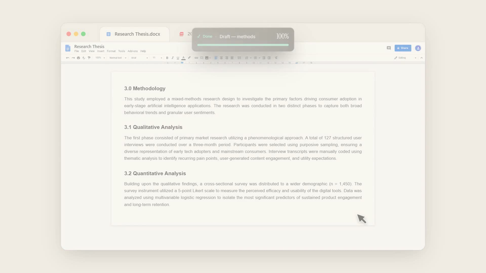

Plover: A Progress Bar for Work That Doesn't Have One
Designing an ambient, single-player desktop companion that breaks daunting projects into actionable steps and fills a real-time progress bar as the work actually moves.
Background & The "Clock vs. Work" Paradox
Most productivity tools measure inputs rather than outputs. A Pomodoro timer tracks how long you sat in front of your display; a desktop time tracker logs which application window was foremost. Neither knows whether your thesis methods section actually advanced or if you stared blankly at a blinking cursor for 45 minutes.
For students tackling thesis chapters, researchers synthesizing literature, and writers wrestling with draft revisions, the greatest friction is task paralysis. Staring down an amorphous, high-stakes objective introduces cognitive overwhelm that stifles initiation.
The Plover Premise: Track the Work, Not the Clock
What if your workspace had an ambient progress bar for open-ended knowledge work? Plover sits unobtrusively alongside your target document, breaks intimidating goals down into concrete micro-milestones via Gemini, and silently increments a progress bar as the real work takes shape on your screen.
Deconstructing Task Paralysis & Context Creep
Through foundational user interviews with students, researchers, and ADHD-diagnosed knowledge workers, three critical friction points emerged:
1. The Blank Page Activation Barrier
The distance between "I need to write my methodology" and writing sentence one feels cavernous. Traditional project tools (Notion, Jira, Asana) compound the problem by demanding manual subtask taxonomy, due dates, tags, and administrative upkeep before a user types a single word of actual content.
2. The Context-Switching Tax
Traditional task lists live in separate browser tabs or desktop windows. Navigating back and forth to mark off checkboxes breaks flow state and exposes users to notifications, open tabs, and algorithmic distractions.
3. The Workplace Surveillance Anxiety
Modern automated tracking tools often resemble invasive surveillanceware. Users expressed vehement resistance to any software that records their full screen, saves screenshots to a server, or creates managerial dashboards.
The Three-Pillar Interaction Architecture
To solve task inertia without inducing cognitive burden, we architected Plover around three minimalist interaction stages:
Pillar 1: One-Line Intent Capture & Cadence Selection
Rather than complex project trees, Plover asks a single prompt in an elegant, distraction-free modal: "What are you working on?" Users can toggle immediate frequency cadences (One-off, Daily, or Weekly) to establish scope in under 5 seconds.

Pillar 2: Gemini-Powered Autonomous Step Decomposition
Clicking "Break into steps →" passes the objective to Gemini, which returns a curated sequence of 4–5 realistic, bite-sized milestones. Crucially, the UI preserves full human agency: every step can be renamed, reordered with drag handles, deleted, or expanded with "+ Add a step" before tracking starts.

Pillar 3: The Privacy-Preserving Window Sandbox
To eliminate surveillance fear, Plover prompts the user to select the specific application window to observe (e.g. Google Docs — Thesis draft). Plover explicitly isolates its vision pipeline to that chosen frame: no background screen regions are visible, images are evaluated transiently in memory, and zero screenshots are ever persisted to disk.

The Ambient Floating "Island" Paradigm
Once tracking begins, the modal collapses completely, morphing into a whisper-quiet, top-docked ambient pill widget designed to inhabit the user's peripheral vision.
Passive Real-Time Progress Feedback
As the user types paragraphs, pastes citations, and solves problems, Plover periodically checks the active window for tangible progress signals against the confirmed steps. The ambient pill reflects forward momentum in real time (• observing · Draft — methods 35% → 74%) with a sleek glowing bar.
There are no intrusive notification popups, no distracting alerts, and no pressure. It acts as an ambient mirror of effort.

Satisfying Closure & Single-Player Ethics
Upon completing the final task milestone, the pill softly expands into a clean ✓ Done 100% indicator. Plover releases the window hook, closes the loop, and lets the user savor the completion milestone without nagging for post-session reviews or sharing metrics with anyone else.

Impact, Validation & Design Takeaways
User testing across university research groups and remote professionals confirmed the psychological power of visible, low-friction momentum:
Quantified Pilot Results:
• 38% Faster Task Initiation: Reducing task onboarding to a single text prompt and AI-assisted step breakdown eliminated starting hesitation for 9 out of 10 test subjects.
• 0 In-Session Context Switches: Users stayed inside their core editing environment for the entirety of their writing blocks without tabbing out to mark to-do lists.
• 92% Privacy Trust Rating: The combination of single-window binding, zero screenshot persistence, and zero employer telemetry was universally cited as the essential prerequisite for adopting desktop vision AI.
Key Design Principles Learned:
1. Periphery Over Prominence: A companion utility should live in peripheral awareness. When UI demands focal attention, it becomes the distraction it was created to solve.
2. Agency Over Full Automation: AI should suggest the trajectory, but the user must retain the ability to prune, rephrase, and override steps.
3. Single-Player by Design: Feedback that reflects your own effort fosters intrinsic pride; surveillance dashboards that judge you trigger avoidance and anxiety.